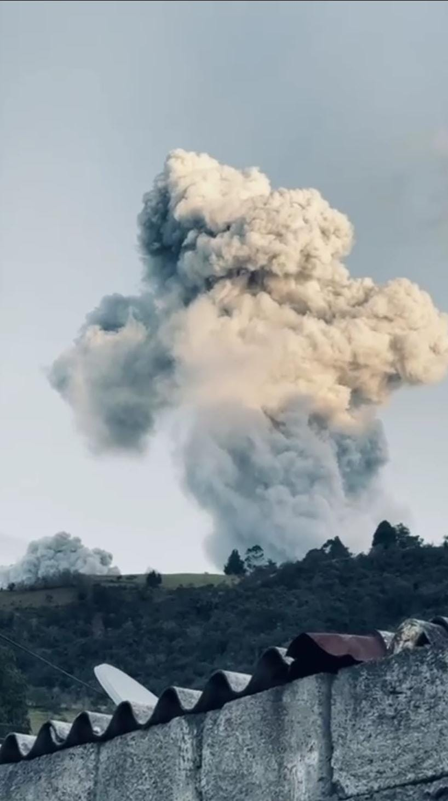
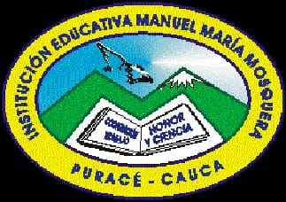
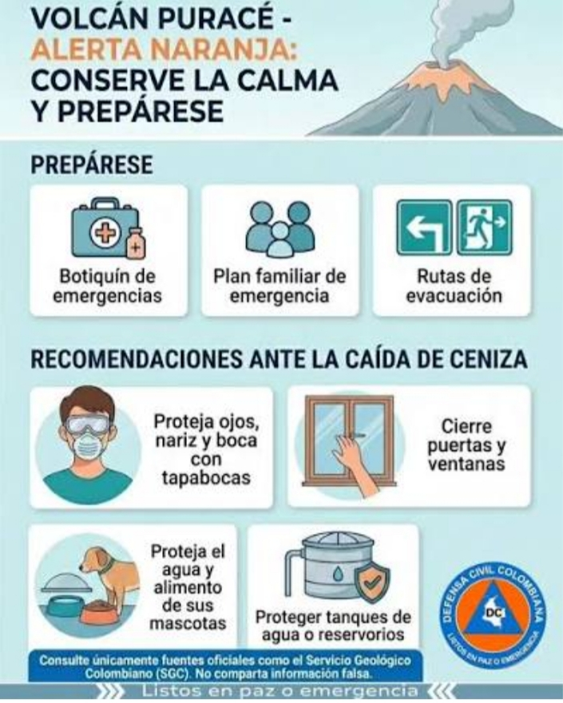

01
Una montaña viva
La actividad del Papá Señor nos recuerda que vivimos junto a una montaña viva y que debemos conocer sus señales y respetar su comportamiento.

UNA MIRADA A NUESTRO TERRITORIO
Una mirada a nuestro volcán
Esta página nace con el propósito de comprender qué está ocurriendo actualmente con nuestro volcán y reflexionar sobre lo que significa el Papá Señor para el territorio de Puracé, su comunidad, su historia y nuestra relación con la naturaleza.
Para nuestro territorio, el Papá Señor no es solamente una montaña. Es una presencia que forma parte de nuestra memoria, nuestra identidad y nuestra manera de relacionarnos con la naturaleza.
Una reflexión sobre nuestro volcán, su actividad y la importancia de conocer y respetar el territorio que habitamos.
SITUACIÓN ACTUAL
Actualmente, el volcán se encuentra en estado de alerta Naranja.
Esta situación significa que se han presentado cambios importantes en los parámetros que son monitoreados por el Servicio Geológico Colombiano.
La información sobre la evolución de la actividad debe consultarse siempre en las fuentes oficiales y en las recomendaciones de las autoridades.
Mantente informado y sigue las recomendaciones oficiales.
Información de referencia: Servicio Geológico Colombiano. Septiembre de 2026.

La actividad del Papá Señor nos recuerda que vivimos junto a una montaña viva y que debemos conocer sus señales y respetar su comportamiento.

Estar informados, seguir las recomendaciones de las autoridades y conocer las rutas y medidas de prevención son acciones fundamentales.
REFLEXIÓN
El Papá Señor es mucho más que una estructura volcánica. Hace parte de un territorio donde la naturaleza, la cultura y la memoria de nuestras comunidades se encuentran.
Su actividad nos invita a mirar nuestro territorio con atención y a comprender que vivir cerca de un volcán también significa aprender a convivir responsablemente con la naturaleza.
Hoy podemos observarlo con respeto, mantenernos informados y prepararnos. El conocimiento y la prevención son herramientas para cuidar nuestras comunidades.
“Conocer nuestro territorio también es una forma de cuidarlo.”